<mat-toolbar color="primary" class="banner">
  <button mat-icon-button class="banner-icon" aria-label="Menu icon button">
    <mat-icon>menu</mat-icon>
  </button>
  <span>
    
  </span>
  <span class="spacer1"></span>
  <span class="nav-links">
    <a mat-button class="nav-button active" routerLink="/home">Inicio</a>
    <a mat-button class="nav-button">Servicios</a>
    <a mat-button class="nav-button">Contacto</a>
    <a mat-button class="nav-button">Nosotros</a>
  </span>
  <app-authentication-section/>
</mat-toolbar>
